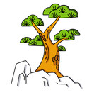

假装有很多人看的样子，装模作样的写一段介绍。
我是葱葱，一名西南交通大学信息科学与技术学院大二年级的女大学生。机缘巧合之下跟着我可爱的“儿子”来到了一个隐藏于二教的“神秘组织”，打破了这里的技术宅们原本宁静而安逸的生活，“几经波折”但是仍旧厚颜无耻的赖在这里压低工作室的技术水准。
如果一不小心被哪个路人看到了这个页面又对这个地方又一丝丝好奇可以去大佬们做的官网上看看（http://fin-x.space/）,证明我们这里还是一个正经的“金融大数据研究院”。如果不幸被当事人看到以下内容，
希望我还能坚强而完整的呆在这里搜集八卦吧。
盛小刀
 Github
Github
 Website
Website
西南交通大学“女大学生”，曾经以做出购物网站为目标稀里糊涂入了坑，现阶段一心想要搞好博客，话说在博客头像的审美问题上我们发生了一丝朽朽滴分歧。目前正在一起进行前端学习，扑腾在小菜鸟到大菜鸟的道路上。灵魂的小伙伴，前进的同行者，黑暗岁月的探照灯。。。编不下去了。。。性格慢热，内心逗比，损人不眨眼，自带学霸与花痴属性，喜欢王菲跟霍建华，喜欢小女生系粉色,单身可撩。
向珂
Website
入坑时间不祥，据说想当个高端黑客吧。进行前端学习，但最近貌似酷爱数据库？对博客也有一种执着的偏爱吧？属性嘛，呆萌!最近还发现隐藏的撩妹高手属性。顺带一提，就是这个人稀里糊涂的带我和上面的逗比稀里糊涂的来了这个感觉有点神秘又有点高端的实验室，然后华丽丽的入了个大坑，据说他对我们的期望就是有一天能超越他吧。额，貌似有点难...
五只羊
Website
工作室四大元老之一，据我观察，主攻前端。真.良师男神，超有耐心，不管你是有多脑残的问题都会面带微笑帮你解决到底完了再教你一堆有用的小技巧，有这样的师傅带妈妈再也不用担心我的学习！但是会担心我掉链子。
老傅
工作室四大元老之一，元老中的“元老”。虽然不知道具体是搞什么的弹四好像森么都很腻害的样子，一个励志要成立硬件工作室做真东西的“元老”，交大里还在徘徊找不到组织又热爱硬件的小朋友在哪里啊～这里有个“老”学长在找你啊～话说刚开始还觉得，学长一定是个高冷的“boy”，然而，后来嘛，，，
老梁
工作室大抱丝，四大元老之一，霸道总裁。同样是一个不明觉厉的人物，最近在搞的人工智能还是虚拟驾驶什么的看起来很厉害的样子。求贤若渴总是高呼“招人，我要招人！”。还有一句“至理名言”：“这些东西，很容易的，只要每天花两个小时看一看，不出一个星期你绝对能学会！”。额。。。不过由于种种原因，对于本葱来说两小时已经变成半小时了```
李文杰
工作室四大元老之一，还不知道主要做什么的，只知道在搞数据库什么的。目前的印象就是邻家学长的样子，还有那年那天会议桌边的卫龙小辣条。。。

王青松
目前工作室年级最高？第二高？的学长，但看长相绝对看不出来。数学学院搞算法吧。说话声音很温柔，为人很热心，不管有什么问题找他总是会帮忙解决。喜欢动漫，一定也很爱玩，嘻嘻嘻。
雅sir
目测是工作室唯一一个搞设计的，一个励志要每天放5张美图提高大家审美的boy。虽然网名是雅sir啦，但是最开始在群里面总是跟大抱丝的对话直接暴露老司机本色，诶呀，大抱丝在我心中无比高冷的形象也大打折扣了呢。而且，据我观察，这个人，一定，是个，吃货，希望不要被打，还有樱桃很好吃！！！
赵辉
数学学院大二生。同样都是大二，但是会的东西可多了，直接秒杀我这个信院渣渣。也是一个稳重内敛的boy，为人亲切。一不小心窥探到他在搞的数据库，看看自己手里的课本，天哪，只有我一个人是渣渣。